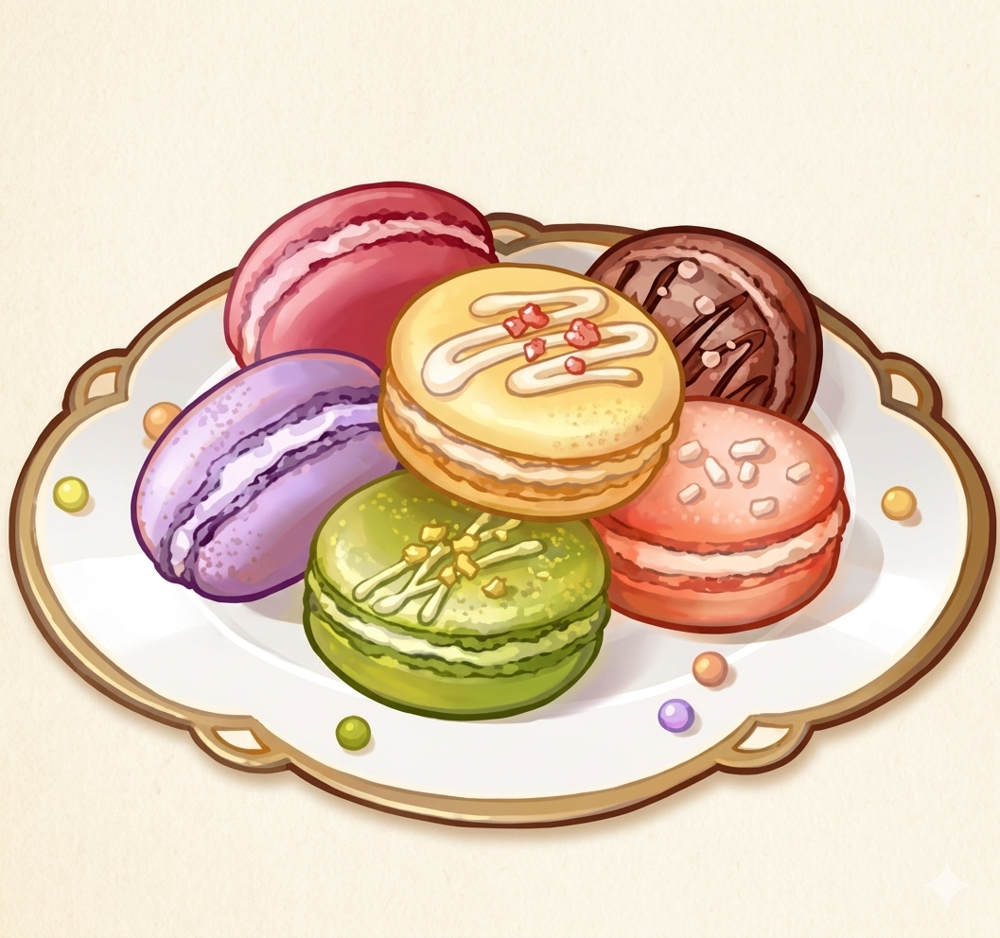
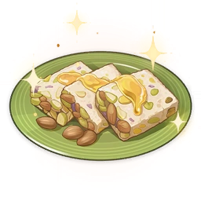

El Padisarah Pudding es uno de los postres más emblemáticos de Sumeru, elaborado con pétalos de Padisarah y Rosas de Sumeru mezclados con leche y gelatina. Al probarlo, sientes como si caminaras sobre nubes de leche, mientras la fragancia de las flores envuelve cada bocado. Es un dulce tan popular que no puede faltar en las celebraciones de la nación de la sabiduría, y dicen que al terminarlo, no puedes evitar lamer la cuchara para disfrutar el último instante de felicidad.

En Fontaine, los Macarons Arcoíris son pequeños pasteles redondos y coloridos que representan la elegancia de la nación de la justicia. Existe un dicho en Fontaine: "una mesa de postres sin macarons es como las muchas aguas sin su manantial". Prepararlos requiere práctica y paciencia, porque el primer macaron puede salir hueco, el segundo deformado, y solo con dedicación se logra la textura perfecta que los hace tan especiales.

Los Dátiles Ajilenakh son frutos que crecen en los oasis del desierto de Sumeru, con una piel dura pero una pulpa dulce y jugosa en su interior. Para los habitantes del mar de arena, son un alimento sagrado y una fuente importante de energía. Se dice que en los antiguos banquetes del Rey del Sol Ardiente, los dátiles convertidos en dulces eran el primer plato que se servía para abrir el apetito, y su cultivo es tan antiguo que aparece incluso en las canciones de las civilizaciones perdidas.